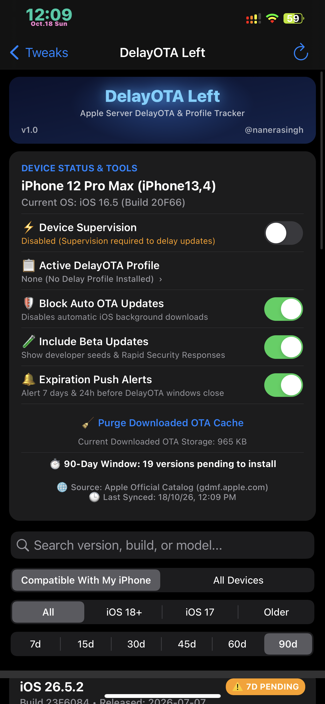
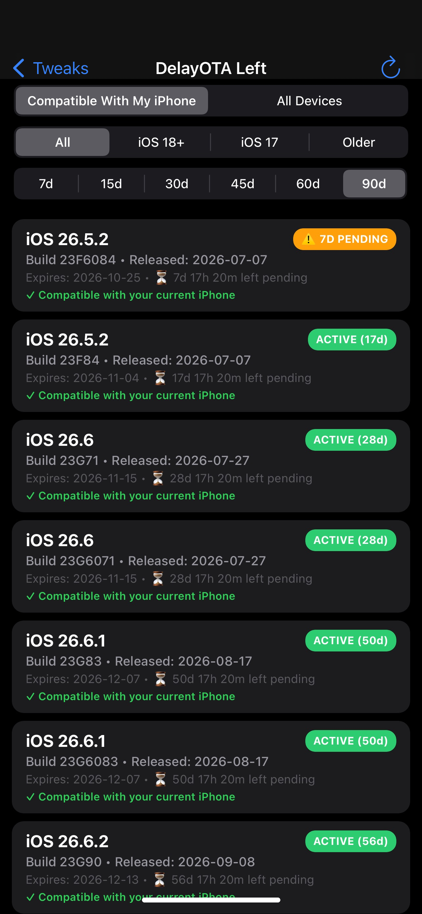
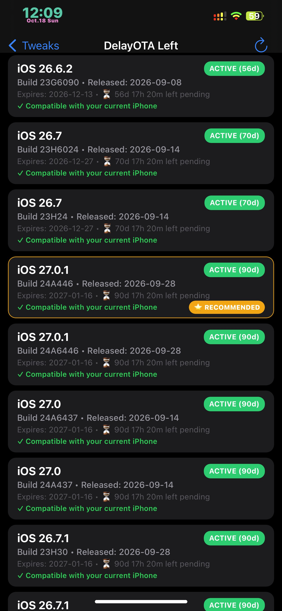
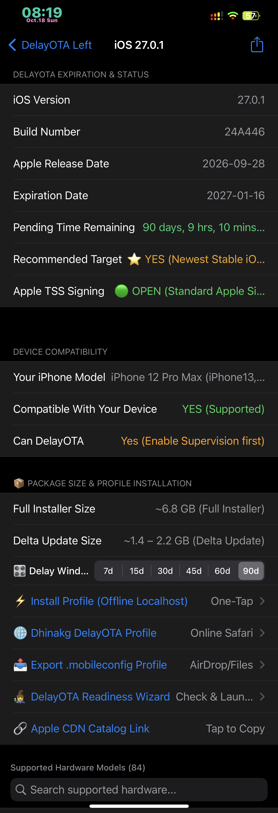
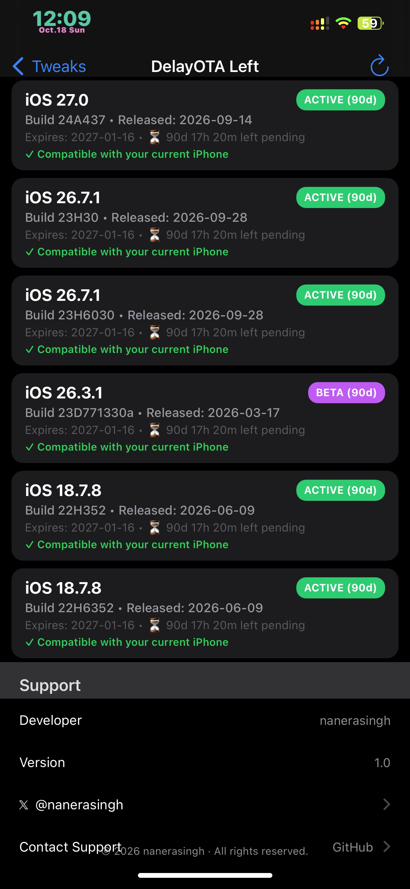
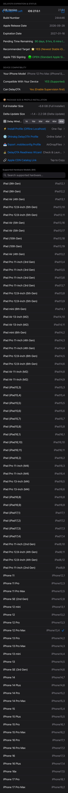
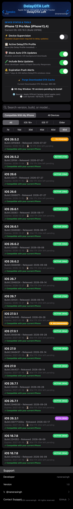

The Ultimate All-in-One Native DelayOTA & Profile Suite for iOS
Welcome to the official release of DelayOTA Left (v1.0), a complete native iOS Settings tool designed to track, manage, and install DelayOTA updates directly on your device without relying on external websites, PC tools, or complex setups.
Never miss a DelayOTA signing window again!







Queries Apple’s official Software Update catalog in real-time. Features offline caching and pull-to-refresh so you always know exact expiration dates and build numbers.
Toggle supervised mode on and off instantly directly in Settings. No PC, no backups, and no external apps needed.
Instantly filter firmware versions by real-time pending countdowns. Want to see urgent updates expiring within a week? Tap 7d to display only versions with ≤ 7 days left before the window permanently closes.
Installs DelayOTA profiles via an embedded, local HTTP microserver right on your device (localhost:8080). No Safari redirects, no dead community links, and no internet required to install your .mobileconfig.
A 6-point pre-flight diagnostic screen that checks:
gdmf.apple.com)Includes a one-tap deep link: 🚀 Launch Software Update in Settings.
Integrated with api.ipsw.me to check if regular iTunes/IPSW signing is 🟢 OPEN or 🔴 CLOSED (DelayOTA Required).
Detects active DelayOTA profiles and effective restriction delays (enforcedSoftwareUpdateDelay), with a direct one-tap shortcut to Settings > General > VPN & Device Management.
Kill automatic background iOS updates. Includes a one-tap button to purge corrupt or partially downloaded update files from /var/MobileSoftwareUpdate, freeing up gigabytes of storage and clearing the red Settings badge.
Receive local push notifications 7 days and 24 hours before a DelayOTA window expires so you never get caught off guard.
Filter by "Compatible With My iPhone" vs "All Devices", version chips (All, iOS 18+, iOS 17, Older), toggle Beta seeds, and live search by build, version, or model.
Automatically highlights the newest stable compatible firmware for your hardware.
If you find DelayOTA Left helpful, consider supporting future development!
☕ Donate via PayPal (@nanerasingh)